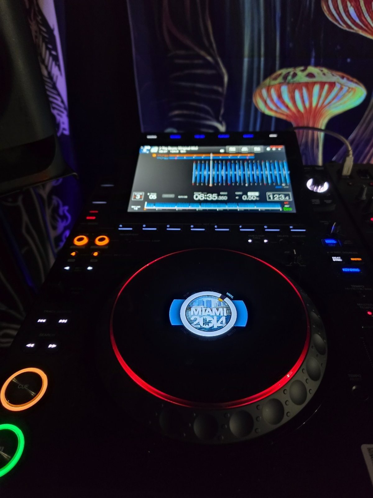
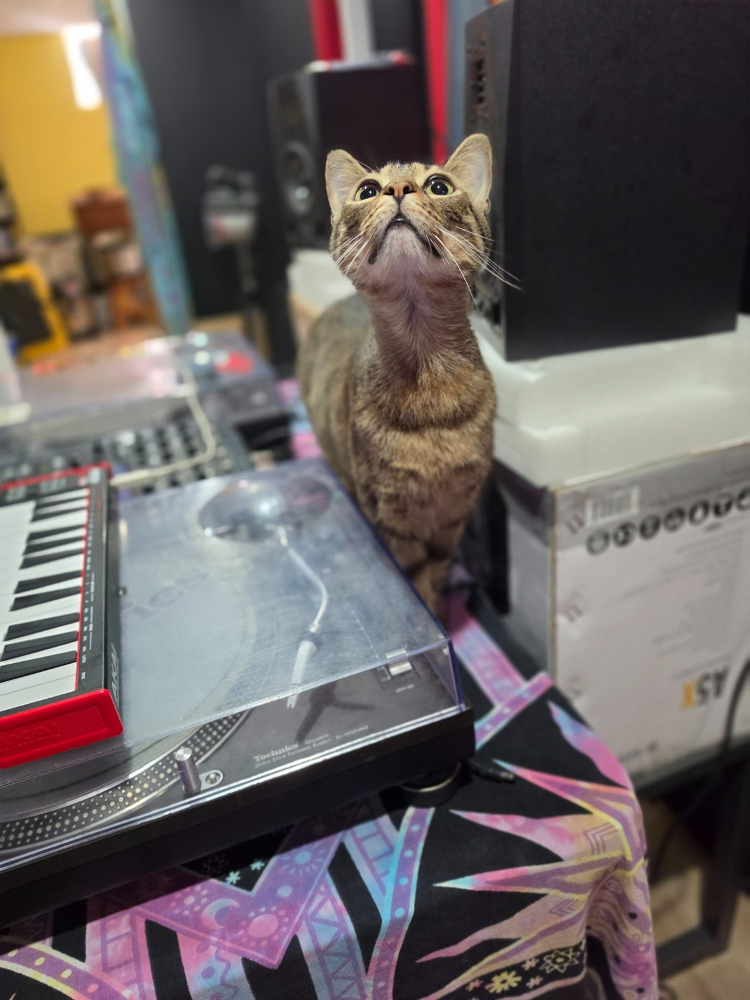
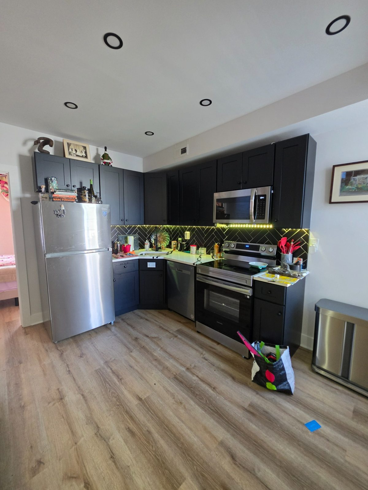
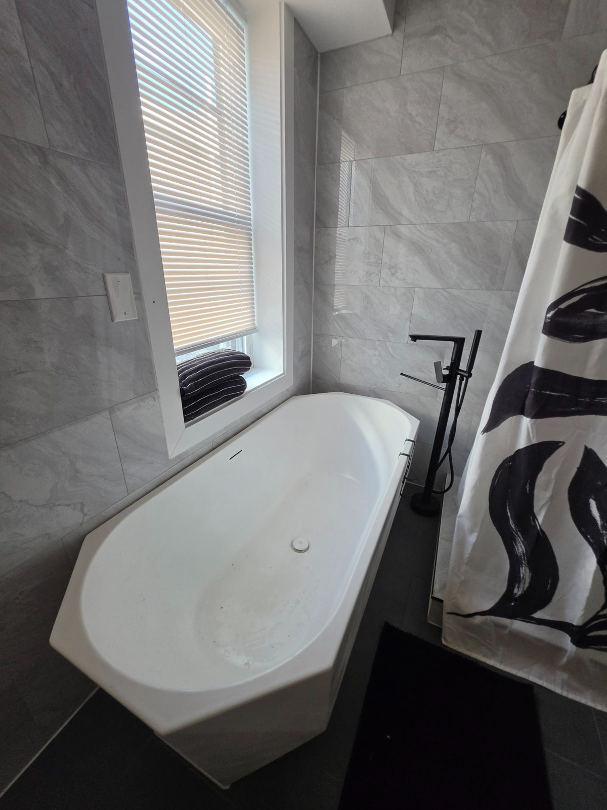
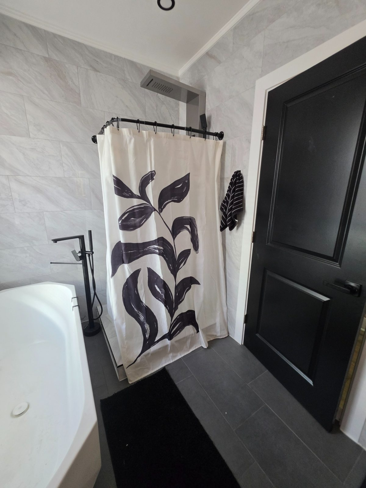
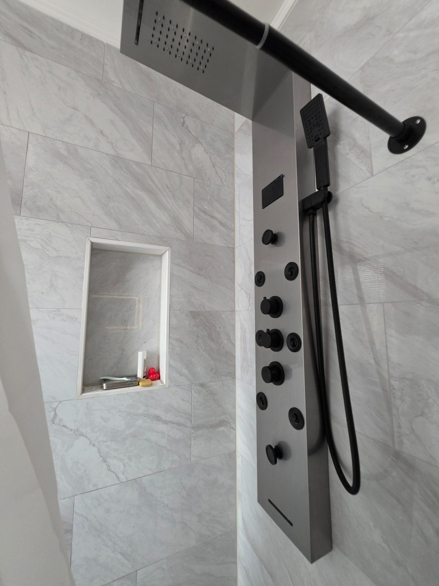
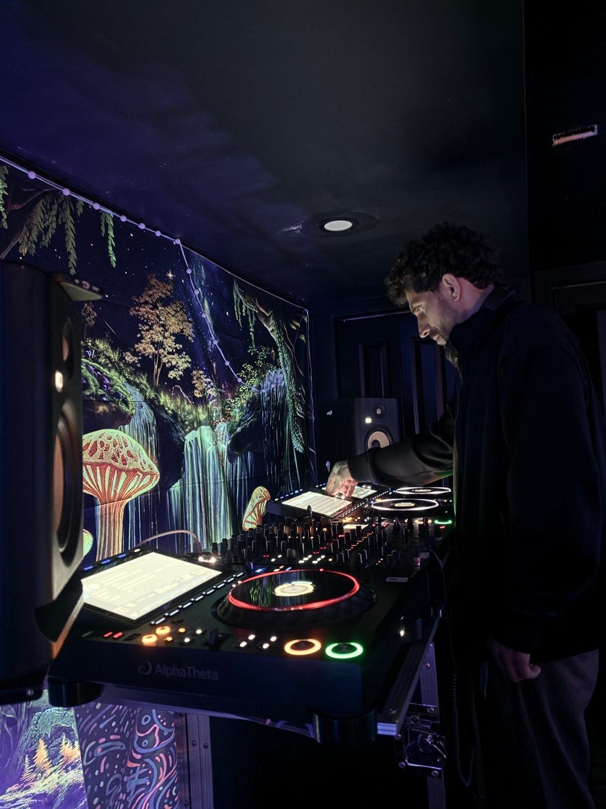
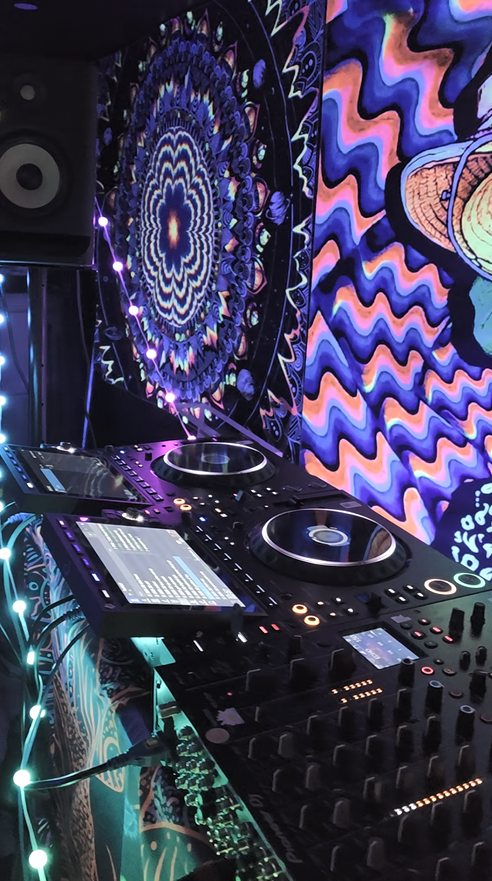

Studio supervision may be provided by a familiar.

Everything around the room that makes the house work.

The Crystal Room and Mask Room share a full bathroom designed as a visual counterbalance to the color-rich bedrooms. Marble-patterned tile, matte black fixtures and clean lines frame both a freestanding full tub and a separate stand-up shower.
The shower includes an overhead rainfall-style fixture and handheld shower head. A lighted mirror, vanity and storage complete the space.


The shared guest kitchen continues the black-and-white palette with red accents. It was designed by owner Derek Sargent, drawing on extensive restaurant and bar-management experience.
Guests may bring and prepare their own food and beverages. The kitchen includes a five-piece dinnerware service for eight, specialty drink glassware, cookware, flatware and full-size appliances. A pull-out dining table seats four.
Food and beverages are also available for additional purchase.
Optional meals are custom-made to the tastes and needs of the guest, prepared in the downstairs area and served upstairs at the dining table. Availability is by arrangement.
Street parking is available on Oxford Avenue. The owner can assist with overflow options, including nearby parking when available.
Two e-bikes are available: $20 each for one hour, $30 for two hours, or $50 for a full day.
Contact the owner for house questions, parking, meals, transportation, technology, local guidance and additional services.
A covered rear sitting area works in sun or rain. It is within the owner's private space, so access is by arrangement. Text to check availability.
The property's network and security-camera systems were designed by Derek, drawing on his enterprise IT and solutions-architecture background.
Derek is available by arrangement for technology consultation and freelance solutions-architecture work.

K-OS Sensory Labs is a working DJ, electronic-music and recording space available for practice, recording, collaboration and instruction.
The mothership is a Pioneer DJM-V10 six-channel mixer with three Pioneer CDJ-3000X players. A separate station provides two traditional turntables and its own mixer. The system is built to record digital decks, vinyl, or combinations of both.
Production tools include an Akai MPC Live II, various synthesizers, a dedicated laptop with Audacity, and a licensed copy of Ableton Live 12. Video capability is planned.
Professional multi-deck digital DJ environment.
Independent vinyl station that can also be integrated with the wider setup.
Recording and production tools for sessions and collaboration.
Derek brings more than 25 years of DJ experience, including collaboration with other DJs and live musicians. He is available for DJ instruction, technical consultation, recording assistance and collaborative sessions.
Studio rates and hours are negotiable according to the session.



Studio supervision may be provided by a familiar.